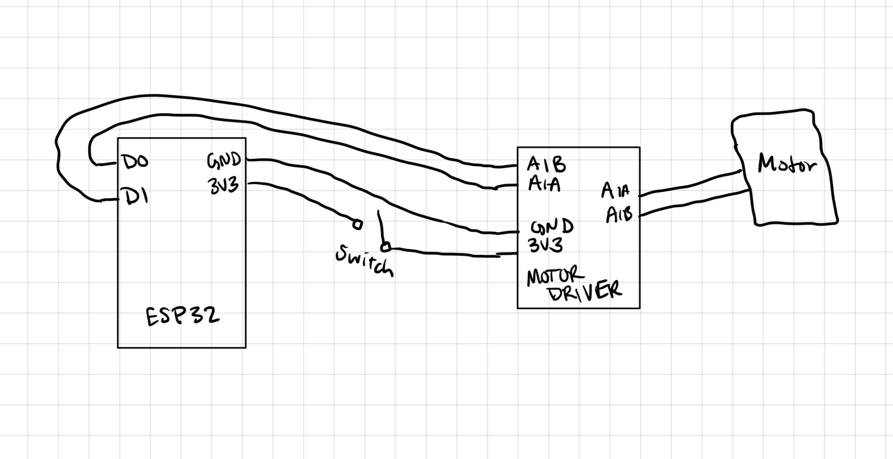

<div class="textcontainer">
<p class="margin"> </p>
<h3>Week 4: Microcontroller Programming</h3>
<h4>Kinetic Sculpture Microcontroller Control</h4>
<p class="margin"> </p>
<p><em>CIRCUIT DIAGRAM</em></p>

<p class="margin"> </p>
<p><em>CIRCUIT SETUP</em></p>
<img src="./Circuit Setup.png" alt="Circuit setup" style="max-width: 100%; height: auto;">
<p class="margin"> </p>
<p><em>ARDUINO CODE</em></p>
<pre><code style="user-select: all; display: block; padding: 1em; background:#000000; color: #ffffff; border-radius: 4px; overflow-x: auto;">
// motor driver pin A1A gets info from D0
const int A1A = D0;
// motor driver pin A1B gets info from D1
const int A1B = D1;
const int freq = 5000;
const int resolution = 8;
void setup() {
//setting up pin outputs
pinMode(A1A, OUTPUT);
pinMode(A1B, OUTPUT);
ledcAttach(A1A, freq, resolution);
//motors start off
ledcWrite(A1A, 0);
}
void loop() {
//Use function for motor control
//direction and speed are inputs
motorA(HIGH, 250);
//run for 1 second
delay(1000);
motorA(HIGH, 220);
// slow for 4 seconds
delay(4000);
}
// Function below is used to control motor
void motorA(byte d, int s) {
if(d == 1){
ledcWrite(A1A, 255-s);
digitalWrite(A1B, HIGH);
} else if (d == 0){
ledcWrite(A1A, s);
digitalWrite(A1B, LOW);
}
}</code></pre>
<p class="margin"> </p>
<p><strong>Documentation:</strong></p>
<pre class="margin">
Building out the circuit was a challenge for me because I have no electrical engineering background. Though a long time back in the day
I took an engineering class during summer camp, online tutorials and webpages as well as the class lectures have reminded me how little I once learned.
I remember turning LEDs on with touch sensors but nothing else. This kinetic sculpture assignment has been a great way to figure out how the circuits actually work,
and using a microcontroller to control the motor with data inputs as well has been exciting. I must say, though, that circuit
diagrams are not intuitive to me at first, but I will get there. In the first week of kinetic sculptures, I tried to use just a
potentiometer to control the speed of the motor, but I found that it was not as responsive as I wanted it to be. This may be in part due to the friction of the pieces
of my sculpture, so when we learned how to do PWM, I was happy that there was another way to control it. Using some of the code that we learned in class, which I have gone
back over and re-commented on to ensure my understanding, I was able to get the motor to move on the time delays and with the speeds that I wanted it to. Ideally, it could be
a bit slower, but again, reality sets in sometimes and the friction just became too much to overcome for a slower speed. The circuit, including the motor driver and a switch that I can
toggle on and off, gives me the control and experience that I wanted. With this circuit and by using the arduino IDE, I was able to get two results, one test result and one final result that the code
corresponds to. Future upgrades would include using the class system we learned in lab this week to control the motor more precisely and allow for multiple actions
to be going on at the same time (like another motor, perhaps). Below is a representation of this circuit in action. The red light on the motor driver indicates that there
is power going to the motor when the switch is toggled.
</pre>
<p class="margin"> </p>
<p><em>CIRCUIT IN ACTION</em></p>
<video src="./Circuit in action.MOV" controls style="max-width: 100%;"></video>
<p class="margin"> </p>
<p><em>TESTING MOVEMENT</em></p>
<video src="./final movement.MOV" controls style="max-width: 100%;"></video>
<p class="margin"> </p>
<p><em>FINAL MOVEMENT</em></p>
<video src="./testing movement.MOV" controls style="max-width: 100%;"></video>
<p class="margin"> </p>
<p><strong>Documentation:</strong></p>
<pre class="margin">
For the movement aspect of the kinetic sculpture, as I mentioned above, I wanted to specifically tailor speed control so that the entire experience
of watching the sculpture made sense. Last week, hooking the motor up to the 5V power supply made it spin like crazy and almost took my hand off the machine
when it got caught in some wires. This week, having more control, I wanted to make some stylistic choices. The testing movement was what I tried first.
I wanted to convey some level of panic or frustration for the arm as it swiveled around trying to reach the fruit and the water, just like Tantalus in the myth.
For that I tried to move the arm forwards and backwards quickly, but it was not the intended effect. A friend suggested that maybe just varying the speed
in one direction could work better. I tried that and it was exactly what I wanted. In the final form of the movement, the arm swings forward quickly, as if the
sculpture itself is trying to get a jump on the fruit or the water. Reaching fast gives the sense of panic, but it slows down once again—as fast as it moves is
also the speed at which the bounty drops or rises away from it, encapsulating perfect frustration and the cycle that Tantalus himself goes through in the myth.
As for the sculptural aspect of this project, I was very satisfied with the final result. I think that the balance of the cardboard art and the wooden moving parts
gives it a perfect aspect of stability and creativity. I was considering giving it an immobile body, some further representation of humanity, but I decided that
it was more interesting to leave the inner moving parts exposed and have them move around in a way that can be interpreted. Any other art on this sculpture
would have distracted from the more meaningful philosophical and mythological aspects of the piece. I think that watching it move is, in and of itself,
part of the experience that I want the viewer to have. While it is a shame that I could not get the motor to move even slower, I think that the speed
I found is good enough. It was important to me to have a visible change, and I believe that I achieved that. I look forward to continuing to think about this
project as I move into the next steps of the final project planning, as it has been a great learning experience that has informed me what I will need to spend
more time on design-wise, and also knowledge-wise.
</pre>
<p class="margin"> </p>
</div>